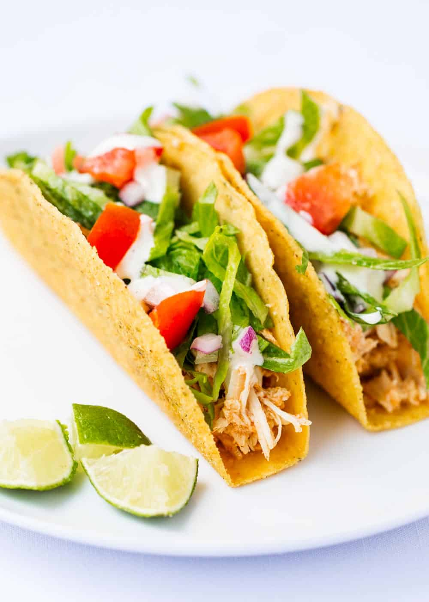

Tacos

This recipe for chicken ranch tacos is grilled chicken with bacon, homemade ranch sauce, cheese and fresh vegetables, all stuffed inside warm flour tortillas. A family friendly meal that’s simple to make and fun to eat!
My family is a little bit taco obsessed, if dinner is served inside a tortillas they’re likely to eat it. These chicken ranch tacos combine some of our favorite flavors to make a fun and easy dinner – it’s almost like a chicken club sandwich in taco form!
Ingredients
- 8 small flour tortillas
- 3 cups warm cooked chicken cut into bite sized pieces
- 1 cup diced tomatoes
- 1 cup shredded romaine lettuce
- 3/4 cup cooked crumbled bacon
- 1 cup shredded cheddar cheese
- 3/4 cup of sour cream
- 1-2 tablespoons of ranch powder
Steps
- Mix together the sour cream and ranch powder, set aside. Alternatively you can use prepared ranch dressing.
- Warm the tortillas.
- Divide the lettuce and tomatoes evenly among the tortillas. Place the chicken on top of each tortilla.
- Divide the bacon and cheese evenly among the tortillas. Drizzle with ranch sauce (or prepared ranch dressing) and serve.
Nutritional Facts
Calories: 254kcal | Carbohydrates: 18g | Protein: 10g | Fat: 15g | Saturated Fat: 7g | Cholesterol: 43mg | Sodium: 486mg | Potassium: 204mg | Fiber: 1g | Sugar: 2g | Vitamin A: 850IU | Vitamin C: 3.5mg | Calcium: 171mg | Iron: 1.7mg
Return to Homepage